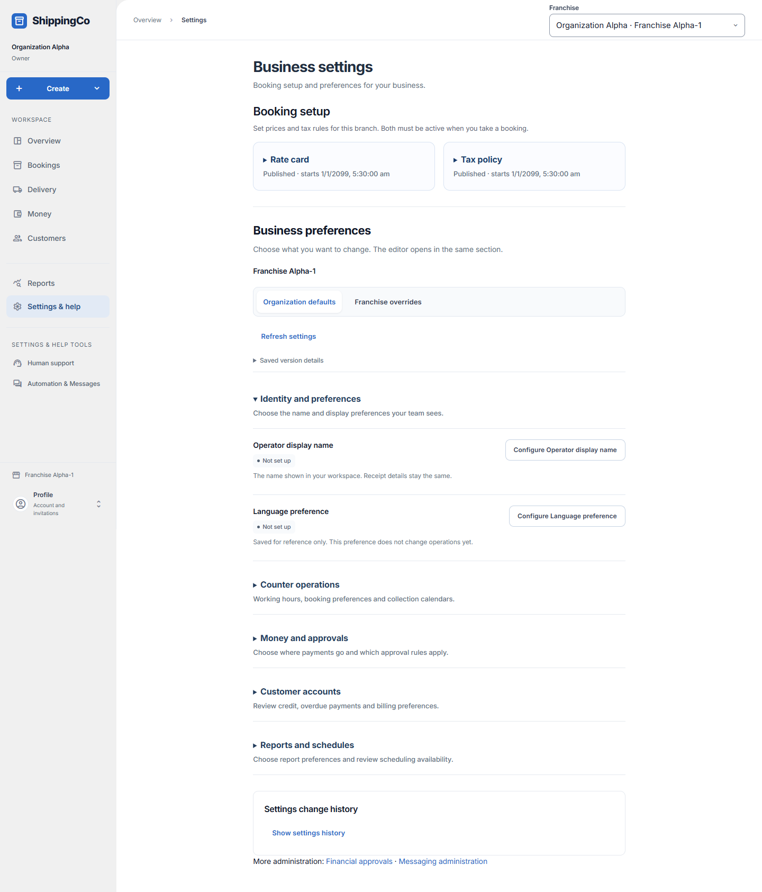
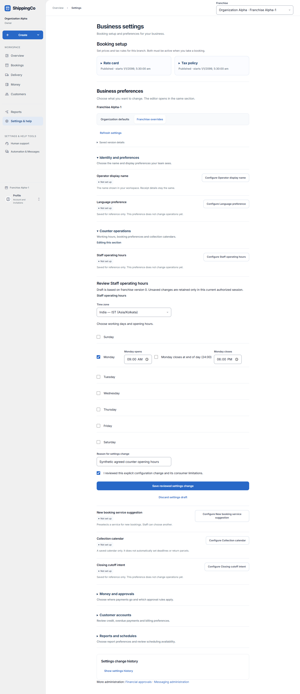

Change business settings
Change one setting in its own section, without losing the context of the page.
Open the correct business or branch
- Open Settings & help and check the selected Franchise at the top.
- GST contains the GST treatment setting. Choose Courier — 18%, GTA — 5%, GTA — 18% or No GST and select Save. The change applies immediately to new calculations. Booking setup contains service prices.
- Business preferences contains grouped settings. Open the group that matches the change you want to make.
- Organisation defaults apply at business level. Franchise overrides are local branch choices. Only permitted roles can change them.
- Using business default means the branch inherits the organisation’s saved value. A local override replaces that preference for this branch.
- Not set up means there is no saved value. Needs review means the saved preference is not currently usable; it is not a successful activation.

Change a preference
- Select Configure beside the setting. Its editor opens in that same section.
- The active section stays open while you edit, so the fields and validation remain visible.
- Change the required fields. Reason for settings change should briefly explain the business reason.
- Read the setting’s explanation and tick the review confirmation. Select Save reviewed settings change.
- Saving a preference does not change old bookings, receipts or reports.
- Discard settings draft closes the unsaved edit after any required confirmation.
- If someone else saved a newer version, refresh and compare. Use latest version for this draft only after checking the current value, then confirm the change again.
- If the result is uncertain, use the same-request retry. Keep the page open until the result is resolved.

Identity and preferences
- Operator display name: the name shown in the workspace. It does not change the legal supplier name or receipt issuer.
- Language preference: a saved language preference. The current app does not promise a full translated interface just because this is saved.
Counter operations
- Staff operating hours: choose Time zone and working days. For each selected day, enter the opening and closing time.
- Closes at end of day (24:00): use this when that day closes at midnight. Otherwise enter the actual closing time.
- Time zone: choose the correct named zone, such as India - IST. Enter another IANA time zone only when you know the correct zone name.
- New booking service suggestion: preselects Standard, Express or Same city for new booking drafts. Staff can choose another service.
- Collection calendar: select collection days and add individual Holiday dates when needed. Remove holiday removes that exception.
- A saved collection calendar does not automatically set collection deadlines or return parcels.
- Closing cutoff intent: saves a local time and time zone as a preference. It does not itself close a cash drawer or settle money.
Money and approvals
- Receiving account reference: select a current active receiving account and one of its supported receiving methods.
- This preference selects an existing account; it does not receive or verify a payment.
- Financial approval policy reference: select an available enabled policy. Change approval rules in Financial approvals, not by typing an invented reference here.
- Agent fee policy reference: select current active agent terms. Manage the real terms in Agent settlements.
- Load more financial references if the needed option is on another page. If choices cannot load, refresh rather than entering a made-up ID.
Customer accounts and reports
- Credit policy, Overdue policy and Billing terms in generic settings cannot set actual customer account terms. Use Open customer accounts to manage the real account.
- New report scope suggestion: choose currently authorised branches. It is a starting selection for a new report, not extra access.
- The local active branch must be included when required. You may need Load more authorised franchises to see later options.
- Report schedule intent: saves report kind, branches, weekday, local time and time zone as a preference.
- Automatic report sending is not available through this preference. Saving it does not send a report or grant report access.
Clear, check history and recover
- Clear override removes this branch’s local preference so it can use the business default. If no default exists, the preference is left blank.
- Clear default removes the organisation’s preference. Read the review message and supply a reason.
- Saved version details and Where this setting comes from show the source and saved version when you need to investigate a change.
- Show settings history lists previous saved changes, reasons, actors and times. Load older settings versions brings more history.
- A read-only role can inspect permitted settings but cannot configure or publish them.
- Use the links to Financial approvals or Messaging administration for those separate tasks.